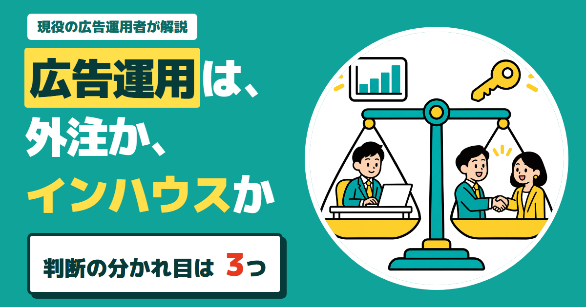

コラム ／ 広告運用
広告運用はインハウスか外注か。判断の分かれ目と費用の総額、移行で手元に残すもの

広告運用をインハウスにするか外注にするか。広告費の規模、任せられる人と時間、商材の性質で、判断は分かれます。インハウスが向くケースも含めて中立に比較し、費用の総額の出し方、一部だけ任せる分担、切り替えるときに手元に残す権限と設定を、各媒体の公式の名前で整理しました。
広告運用を「自社でやるか、外に任せるか」で迷ったとき、メリットとデメリットの一覧はよく見かけます。けれども、実際に判断を分けるのは、広告費の規模、運用に割ける人と時間、商材の性質といった、自社の事情です。そして、どちらを選んでも、あとで切り替えることがあります。そのときに困るのは、アカウントの権限や計測の設定が、誰の手元にあるのか分からない状態です。
この記事では、運用型広告の運用に7年間携わってきた運営者(SET UP 代表)が、インハウスと外注を比較して決めるための基準と、費用の総額の出し方、切り替えるときに手元に残しておくものを整理します。表の金額と時間はすべて計算の仕方を示すための仮の数字で、実在の代理店の料金や統計ではありません。媒体の権限や仕様は、2026年11月22日に各媒体の公式ヘルプで確認した内容です。
結論:規模・人と時間・商材で決め、手元に残すものを先に決める
- 判断の分かれ目は、広告費の規模、任せられる人と時間、商材の知識と変化の速さの3つ。インハウスが向くケースも、はっきりある
- 費用は、手数料だけでなく、担当者の時間や学習、ツール、制作費まで入れた1か月の総額で比べる
- 全部を任せるか自社でやるかの二択ではなく、工程ごとに分ける形もある
- どちらを選んでも、アカウントの管理者権限、計測の設定、コンバージョンの定義、過去データは、自社の手元に残す
インハウスと外注の違い
まず、2つの形の違いを一枚の表にします。どちらが「正しい」のではなく、何を得て何を手放すかの違いです。
| 比べる点 | インハウス(自社で運用) | 外注(代理店・個人に任せる) |
|---|---|---|
| 費用の出方 | 手数料はかからない。代わりに、担当者の時間、学習、ツール、制作の費用がかかる | 手数料(料率や最低手数料)がかかる。自社の担当者の時間は、窓口の分だけ減る |
| 動き出すまで | 担当者が学び、アカウントや計測を整える時間がかかる | 運用に慣れた人が最初から設計できる。ただし、事業の事情を伝える時間は必要 |
| 判断の速さ | 在庫、価格、キャンペーンの変更をすぐ広告に反映できる | 連絡の手間が入る。連絡の経路が短いかで差が出る |
| 成約データへの近さ | 営業や受注の情報を、そのまま広告の判断に使いやすい | 成約や売上の情報を、こちらから渡さないと見てもらえない |
| 知識と経験 | 社内に蓄積される。担当者が辞めると途切れやすい | 複数の案件の経験を使える一方、自社の事情に合うかは担当者による |
| 止まるリスク | 担当者の休みや退職で、運用が止まりやすい | 担当の交代や契約の終了で、止まることがある |
この表の中で、見落とされやすいのが「成約データへの近さ」です。広告の管理画面に出るのは申し込みまでで、その後に成約したかどうかは、社内にしかない情報であることが多いからです。見方の基本は「広告レポートの見方。最初に見るべき3つの数字と、見なくてよい数字の扱い」にまとめています。
判断の分かれ目
インハウスにするか外注にするかは、次の6つの点で考えます。最初の3つが大きな分かれ目で、あとの3つは、決めてから困らないための確認です。
1. 広告費の規模
広告費が小さいうちは、外注の手数料が、広告費に対して大きな割合になります。料率型の代理店には最低手数料を設けているところがあり、たとえば広告費が月10万円で最低手数料が10万円なら、割合は100%です。この計算は「広告運用代行の手数料。「20%」より先に確認したい、最低手数料と1か月の総額」で表にしています。
一方で、広告費が小さいと、自社で運用しても得られる成果の金額が小さく、担当者の時間に見合わないこともあります。広告費の規模だけで決めず、次に書く「人と時間」と合わせて見るのが、運営者の考えです。
2. 任せられる人と時間
広告運用は、設定したら終わりではありません。毎週の数字の確認、広告文やクリエイティブの入れ替え、検索語句やターゲティングの見直し、計測の確認が続きます。運営者の感覚では、「月に何時間を、誰が、安定して使えるか」が、インハウスの成否をいちばん左右します。
兼任の担当者が、本業の合間に見る形だと、忙しい月に手が止まります。広告は止まっても費用が出ていく仕組みなので、見る人がいない期間が生まれる体制は、外注を考えるサインです。逆に、運用の専任か、それに近い時間を取れる人がいるなら、インハウスは現実的な選択肢です。
3. 商材の知識と変化の速さ
商材の知識は、社内にあるほうが強いものです。専門性が高く、説明に正確さが求められる商材、在庫や価格が頻繁に変わる商材、季節やキャンペーンで売り方が変わる商材は、社内で判断できるほうが速くなります。外注の場合、そうした変化を、毎回こちらから伝える手間が生まれます。
逆に、広告の知識が必要な部分(媒体の仕様変更への対応、複数媒体の使い分け、計測の設計)は、運用に慣れた人のほうが速いことが多いです。商材の知識は社内、媒体の知識は外、という分担が、後で書く「一部だけ任せる形」につながります。
4. 成約データへの近さ
申し込みの後の成約、受注金額、リピートの情報が、社内のどこにあるか。広告の判断を、成約まで見て行いたいなら、そのデータを渡す手間が、外注では発生します。逆に、社内にそのデータがなく、管理画面の数字しか見られない場合は、インハウスにしても判断の質は上がりません。
5. 過去データと学習の時間
インハウスに切り替えるとき、これまでのアカウントのデータ(配信の履歴、コンバージョンの記録、オーディエンス)が手元に残っているかで、立ち上がりの速さが変わります。データが外にしかない状態から始めると、学習の時間が余計にかかります。
また、自社で運用するなら、担当者が学ぶ時間も費用です。Google の Skillshop(スキルショップ)は無料で学べますが、プロフェッショナル認定資格は今後有料になる予定で、基礎的な認定資格は無料とされています(2024年1月の案内)。Google 広告の認定資格は、80%以上で合格、試験時間は75分、有効期間は1年とされています(2026年11月22日に公式ヘルプで確認)。ただし、資格を取ることと、自社の数字を見て運用を回せることは別です。資格の勉強は入口で、実際のアカウントで数字を見ながら判断する経験が、時間の大部分になります。
6. コンバージョンの定義を、誰が持つか
これも見落とされやすい点です。「何を成果として数えるか」(資料請求か、問い合わせか、電話か、購入か)は、広告の配信の方向を決めます。外注に任せる場合、この定義を代理店に任せきりにすると、数えやすいものが成果になり、事業の成果から離れていくことがあります。
運営者の考えでは、コンバージョンの定義と、1件にかけてよい上限(許容CPA)は、外注でもインハウスでも、自社が持つべきものです。許容CPAの決め方は「広告レポートの見方。最初に見るべき3つの数字と、見なくてよい数字の扱い」で書いています。
分かれ目を一枚の表にする
| 見る点 | インハウス寄り | 外注寄り |
|---|---|---|
| 広告費の規模 | 手数料の割合が重く感じる規模で、時間を取れる人がいる | 規模が大きく、手数料より運用の質のほうが成果に効く |
| 人と時間 | 専任か、それに近い時間を安定して使える人がいる | 兼任で、忙しい月に手が止まる。担当が1人だけ |
| 商材と変化の速さ | 専門性が高い、価格や在庫が頻繁に変わる、社内で判断したい | 変化が緩やか。媒体の知識や複数媒体の使い分けが必要 |
| 成約データ | 社内に成約のデータがあり、広告の判断に使える | データを共有する手間を許容でき、渡す仕組みを作れる |
| 過去データ | アカウントを自社の名義で持ち、履歴が手元にある | 新しく始める。履歴がまだない |
| 学習の時間 | 学ぶ時間を、仕事として確保できる | 学ぶ時間を取れず、すぐに設計から任せたい |
費用は1か月の総額で比べる
外注の手数料だけを見て「高い」と感じるのは、自分でやる側の費用を数えていないからかもしれません。反対に、手数料がかからないからと、インハウスの費用をゼロとして比べるのも正確ではありません。同じ項目で、1か月の総額を出して並べます。
次は、計算の仕方を示すための仮の数字です。担当者の人件費は1時間3,000円(仮)、外注の手数料は広告費の20%・最低手数料なし(仮)、いずれも税別です。
| 項目(月あたり・仮) | 広告費50万円 インハウス | 広告費50万円 外注 | 広告費100万円 インハウス | 広告費100万円 外注 |
|---|---|---|---|---|
| 運用の作業時間 | 20時間 6万円 | ― | 30時間 9万円 | ― |
| 学ぶ時間(月3時間) | 0.9万円 | ― | 0.9万円 | ― |
| ツール | 1万円 | ― | 1万円 | ― |
| クリエイティブの制作 | 2万円 | 2万円 | 2万円 | 2万円 |
| 手数料(20%) | ― | 10万円 | ― | 20万円 |
| 窓口の時間(月4時間) | ― | 1.2万円 | ― | 1.2万円 |
| 広告費以外の合計(税別) | 9.9万円 | 13.2万円 | 12.9万円 | 23.2万円 |
この仮の数字では、インハウスのほうが安くなります。けれども、前提を変えると結論は変わります。たとえば、広告費50万円で担当者が慣れておらず、作業時間が月40時間かかるなら、時間の費用は12万円になり、広告費以外の合計は15.9万円で、外注の13.2万円を上回ります。結果を左右するのは、料率より「作業時間をいくらと見るか」です。自社の数字を入れて、同じ表を作ってみてください。
表に入れていない費用もあります。インハウスなら、担当者が辞めたときの引き継ぎや、運用が止まった期間の機会損失です。外注なら、消費税、初期費用、レポート作成費といった別料金です。外注側の総額の出し方は、「広告運用代行の手数料。「20%」より先に確認したい、最低手数料と1か月の総額」で、計算例つきで書いています。
費用の比べ方でもう1つ大切なのは、成果を同じ物差しで見ることです。インハウスでも外注でも、判断するのは、管理画面の獲得単価ではなく、費用を足した後の1件あたりの金額と、許容CPAの比較です。
一部だけ任せる形
インハウスか外注かは、二択ではありません。広告運用の工程を分け、得意なところを分担する形があります。次の表は、工程ごとに、自社と外部のどちらが担いやすいかを整理したものです。
| 工程 | 自社が担いやすい | 外部に任せやすい |
|---|---|---|
| 目標と許容CPAの決定 | 粗利や成約率を知っているのは自社。自社が決める | 決め方の相談には乗れる。決定は自社 |
| アカウントの初期設計 | 商材の知識の提供 | 構成、キーワード、ターゲティングの設計 |
| 計測の設計(GA4・GTM・コンバージョン) | コンバージョンの定義、管理者権限の保管 | 設定の作業と動作の確認。管理者だけができる作業(GAからのコンバージョンのインポートなど)は、自社の管理者が行う |
| クリエイティブ(広告文・バナー) | 商材の強み、キャンペーン内容の提供。社内で作る場合も | 検証の設計、制作の量が必要な場合 |
| 日々の運用(入札・予算・検索語句の調整) | 時間が取れるなら、自社でも可能 | 毎日の確認や、複数媒体の運用 |
| レポートと振り返り | 成約データと合わせた判断 | レポートの作成、改善案の提案 |
この表をもとに、よくある形を4つ挙げます。
- 初期設計だけ任せる:アカウントと計測の最初の設計を外部に頼み、運用は自社で行う。管理者権限は最初から自社が持つ
- 運用は外注、制作は社内:商材の強みを知っている社内で広告文や画像を作り、運用の調整は外部に任せる
- インハウスの支援を受ける:運用は自社の担当者が行い、定期的に外部の運用者に、設定や数字を見てもらう
- 監査だけ任せる:運用は自社または別の代理店で行い、アカウントを外部の運用者に見てもらって、改善点を聞く
どの形でも、どこまでをどちらが担うかを、書面で決めておきます。曖昧なまま始めると、「それはそちらで」の押し付け合いが起きやすくなります。
移行のときに手元に残すもの
インハウスから外注へ、外注からインハウスへ、あるいは代理店を変えるとき、いちばんの問題は、何が誰の手元にあるのかです。ここでは、媒体ごとの権限の名前を、公式ヘルプの表記のまま整理します。2026年11月22日に、各媒体の日本語の公式ヘルプで確認した内容です。
Google 広告
Google 広告のアクセス権(ユーザー権限)は、「メール専用」「お支払いとご請求」「読み取り専用」「標準」「管理者」の5つです。広告の編集ができるのは「標準」以上です。次の操作は、「管理者」だけができます。
- アクセスの許可、権限の変更、招待の取り消し
- MCC(クライアント センター)からのリンク申請の承認と拒否、MCCとのリンクの解除
- サービス間リンクの追加と削除
- Google アナリティクス(GA)との連携でのコンバージョンのインポート
- 各ユーザーの認証方法と最終ログインの確認
ヘルプには、管理者を2人以上置くことを勧める注記があります。管理者が代理店の担当者1人だけだと、その人がいなくなったときに、自社が権限を変えられなくなります。自社の担当者を「管理者」にしておくことが、いちばん基本の備えです。
代理店がMCCを使っている場合は、「オーナー」の考え方も押さえます。オーナーになれるのは、1つのMCCだけです。オーナーのMCCは管理者権限とデータへのアクセス権を持ちますが、データそのものは、クライアント(広告主)のアカウントが持ち続けます。クライアント側の管理者は、オーナーのMCCとのリンクを、いつでも解除できます。解除しても、アカウントの履歴は失われず、機能は引き続き使えます。ただし、MCCの共有リマーケティング リストとクロスアカウント コンバージョンは、使えなくなります。
注意したいのは、MCCが支払いを持つ「月次請求書払い」の場合です。リンクを解除する前に、支払い設定を変えておかないと、配信が止まります。なお、MCCが作ったアカウントは、オーナーが自動的にそのMCCになります。自社に管理者がいない状態から引き取る手順は、今回の確認では見つけられていません。そのような形で始める場合は、契約の前に、引き取りの手順を代理店に確認してください。
GA4・Googleタグ マネージャー
GA4の役割は、「管理者」「編集者」「マーケティング担当者」「アナリスト」「閲覧者」の5つと、データ制限が2つです。ユーザーの管理ができるのは、管理者だけです。
Googleタグ マネージャー(GTM)の権限は、アカウントレベルが「管理者」「ユーザー」、コンテナレベルが「アクセス権なし」「読み取り」「編集」「承認」「公開」です。ヘルプには、管理者を2人以上置くこと、そしてアカウントの管理は、外部の代理店ではなく、組織内の担当者が行うことを勧める記述があります。この勧めはGTMについてのもので、ほかの媒体のヘルプには、同じ趣旨の記述を確認できていません。
Meta 広告
Meta では、広告アカウントなどの「アセット」が所属できるポートフォリオは1つで、広告アカウントを所有できるのも1つです。代理店向けの「共有をリクエスト」を使うと、広告アカウントはクライアントのポートフォリオに残ったまま、アクセスだけが共有されます。この形なら、代理店との契約が終わっても、アカウントは自社のポートフォリオにあります。
既存の広告アカウントを、あとからポートフォリオに追加すると、そのアカウントを削除したり、別のポートフォリオに移動したりできなくなる場合がある、とヘルプにあります。「移せない」と決めつけずに、追加する前に、公式ヘルプで条件を確認してください。
Yahoo!広告
Yahoo!広告の権限は、「管理権限」「登録更新権限」「参照権限」の3つです。支払い設定は、管理権限だけが行えます。他社のビジネスIDの利用者を、広告アカウントに招待することもできます。ヘルプには、招待したユーザーの操作の責任は、招待した側にあると書かれています。外部の運用者を招待するときは、この責任の所在も踏まえて、どの権限を渡すかを決めます。
手元に残すもののチェック表
媒体の権限のほか、運用の中で積み上がるものも、手元に残します。移行の前に、次の表で一つずつ確認します。
| 残すもの | 確認すること | 公式の名前・出典 |
|---|---|---|
| アカウントの名義と管理者権限 | Google 広告、Meta、Yahoo!広告のそれぞれで、自社の担当者が最上位の権限を持つか。管理者は2人以上か | Google 広告「管理者」、Meta「ポートフォリオ」、Yahoo!広告「管理権限」 |
| MCCとのリンク | 誰のMCCとリンクしているか。解除の前に、支払い設定の変更が必要か | Google 広告「オーナー」「リンクの解除」 |
| GTMのコンテナと権限 | 自社の担当者が、アカウントの「管理者」か。コンテナの「公開」権限を誰が持つか | Googleタグ マネージャー「管理者」「公開」 |
| GA4のプロパティ | 自社の担当者が「管理者」か。Google 広告とのリンクが自社の管理下にあるか | Google アナリティクス「管理者」 |
| コンバージョン設定の一覧 | 何を成果として数えているか、それぞれの意味と数え方を、文書にして持つ。GAからのインポートは、Google 広告の管理者だけが行える | Google 広告「コンバージョンのインポート」(管理者) |
| オーディエンス・リスト | MCCの共有リマーケティング リストは、リンクを解除すると使えなくなる。必要なら、自社のアカウントでリストを作り直す前提で計画する | Google 広告「共有リマーケティング リスト」 |
| クリエイティブの元データ | 広告文、画像、動画の元データ(編集できる形式)と、使用の権利が、自社に渡る契約か | 運営者の整理(契約書で確認) |
| 変更履歴とレポート | 過去のレポート、配信の変更の履歴、検証の結果を、引き継ぎ資料として受け取れるか | 運営者の整理(契約書で確認) |
| 支払いの設定 | 誰のクレジットカードや請求書で払っているか。広告費の請求が、代理店経由か、媒体から直接か | Google 広告「お支払いとご請求」、Yahoo!広告の支払い設定(管理権限のみ) |
| お客様ID | 求めがあればお客様IDを提供するよう、Google が代理店に求めている(Google 広告) | Google サードパーティ ポリシー |
Google が代理店に求めているルール(広告費を請求額のとおり報告する、管理費用を事前に書面で示す、求めがあればお客様IDを提供する)は、2026年11月22日に公式ヘルプで確認しました。サードパーティ ポリシーは、ヘルプに、適用は英語版の記述を基準とする旨が書かれています。月別レポートの提供には条件がついているので、詳しくは「広告代理店の選び方。運用者が見る4つのポイントと、Googleが代理店に求めているルール」の表を見てください。
切り替えの順番
切り替えは、3つの場面に分けて考えます。共通しているのは、「止めずに、手元に残しながら」進めることです。
外注からインハウスへ
- 自社の担当者に、各媒体の最上位の権限(管理者など)が付いているかを確認する。付いていなければ、まずここから
- 管理画面を見て、数字の見方を、外注先に説明してもらう期間を設ける(引き継ぎの期間)
- コンバージョン設定の一覧、計測の構成、運用の記録を、資料として受け取る
- MCCとのリンクを解除する前に、支払いの方法を確認する(月次請求書払いの場合は、事前に支払い設定を変える)
- リンクの解除と、外注先の権限の削除は、引き継ぎが終わってから行う
インハウスから外注へ
- これまでの数字と、成果の定義、許容CPAを、自社の言葉で書き出して渡す
- 管理者権限は自社に残し、外注先には、運用に必要な最小の権限(標準など)を付ける。管理者だけができる操作は、自社の管理者が行う
- 外注先の手数料と、含まれる作業を、書面で確認する(「広告代理店の選び方」の「商談で聞くべき10の質問」が使えます)
- 最初の数か月は、運用の記録(何を試したか)の報告を求める
代理店を乗り換える
- 今の代理店との契約の期間、解約の予告、最低の期間と違約金を、契約書で確認する
- アカウントが自社の名義か、代理店のMCCのオーナー配下かを確認する
- 新しい代理店に、これまでのレポートとコンバージョン設定の一覧を渡せるようにする
- 権限の付け替えと、MCCのリンクの切り替えは、配信が止まらない順番で行う。支払いが代理店経由の場合は、先に支払いの付け替えを計画する
選ぶときに確認したい点は、「広告代理店の選び方。運用者が見る4つのポイントと、Googleが代理店に求めているルール」にまとめています。
よくある質問
- Q. 広告費がいくらなら、インハウスにしたほうがよいですか?
- 金額だけでは決められません。広告費の規模に加えて、運用に月に何時間、誰が使えるか、商材の変化の速さ、成約のデータが社内にあるかで決まります。仮の数字でも、作業時間の置き方で結論が逆転するので、自社の時間で、1か月の総額の表を作って比べてください。
- Q. 担当者が1人だけでも、インハウスにできますか?
- できます。ただし、その担当者が休んだり辞めたりしたときに止まらない備えが必要です。管理者権限を2人以上で持つ、コンバージョン設定や運用の記録を文書にしておく、といったことです。それが難しければ、運用の一部、または監査だけを外部に任せる形もあります。
- Q. 代理店を途中で変えても、成果は落ちませんか?
- アカウントとデータが手元にあるかで変わります。Google 広告では、MCCとのリンクを解除しても、アカウントの履歴は失われません。ただし、MCCの共有リマーケティング リストなどは使えなくなります。移行の前に、手元に残すもののチェック表で確認してください。
- Q. 外注すると、広告の知識が社内に残りませんか?
- 任せ方で変わります。コンバージョンの定義と許容CPAを自社が決め、管理画面を見られる状態にして、運用の記録(何を試して、どうだったか)を報告してもらえば、知識は社内にも残ります。最初から「いずれインハウスにする」前提で、外注先に引き継ぎ資料を求める形もあります。
- Q. 資格を取れば、インハウスで運用できますか?
- 資格は、仕組みを学ぶ入口になります。ただ、自社の数字を見て、何を変えるかを判断し、結果を確かめる経験は、実際のアカウントでしか積めません。資格を取ることと、運用を任せられることは、別のこととして考えてください。
まとめ
- インハウスか外注かは、広告費の規模、任せられる人と時間、商材の知識と変化の速さで決める
- 費用は、手数料だけでなく、担当者の時間、学習、ツール、制作費を入れた1か月の総額で比べる。作業時間の置き方で結論は変わる
- 全部任せるか全部自社でやるか、以外の形もある。初期設計だけ、運用は外注・制作は社内、インハウスの支援、監査だけ、などの分担がある
- どちらを選んでも、アカウントの管理者権限、計測の設定、コンバージョンの定義、過去データは自社の手元に残す
- 切り替えは、支払いの設定を確認し、引き継ぎが終わってから権限とリンクを外す
- コンバージョンの定義と許容CPAは、自社が持つ
運用型広告の運用代行のご相談
SET UP は、Google・Yahoo!・Metaなどの運用型広告の運用代行を行っています。費用は広告費の15%(最低運用費 月10万円)、初期費用は0円、契約期間の縛りはありません。アカウントの初期構築、計測の設定、月次レポートの作成は運用費に含まれます。LPやバナーの制作を外部に依頼する場合の制作費は含まれないため、必要かどうかも含めて最初にご相談し、初回のご提案時に総額をお出しします。すでに広告を配信中の方には、無料のアカウント診断も行っています。
参考
いずれも日本語版の公式ヘルプを、2026年11月22日に確認しました。
- Google 広告 ヘルプ「アクセス権」(ユーザー権限)
- Google 広告 ヘルプ「クライアント センター(MCC)アカウント: クライアント アカウントのオーナー権限について」
- Google 広告 ヘルプ「クライアント センター(MCC)アカウントからのアカウントのリンク解除について」
- Google 広告 ヘルプ「クライアント センター(MCC)アカウント: MCC アカウントからアカウントのリンクを解除する」
- Google 広告ポリシー ヘルプ「Google サードパーティ ポリシー」(適用は英語版が基準)
- Google アナリティクス ヘルプ(アクセス権と役割)
- Googleタグ マネージャー ヘルプ(ユーザー権限)
- Meta ビジネスヘルプセンター(ポートフォリオとアセット)
- Meta ビジネスヘルプセンター(代理店への共有)
- Yahoo!広告 ヘルプ(権限)
- Yahoo!広告 ヘルプ(ユーザーの招待)
- Skillshop ヘルプ(料金)
- Skillshop ヘルプ(認定資格)
- Google 広告 ヘルプ(Google 広告の認定資格)